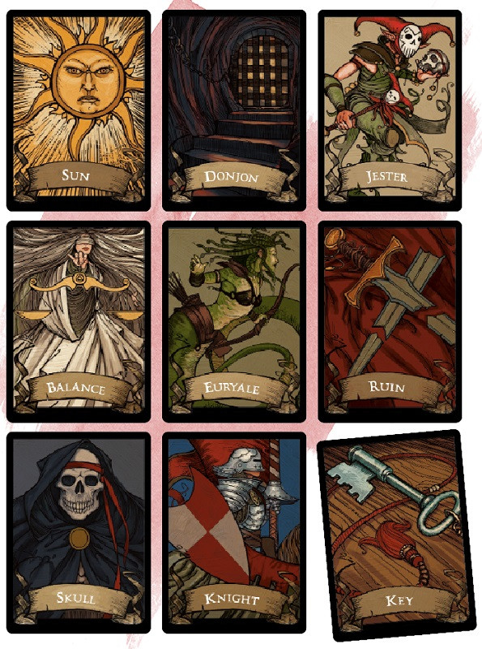

Deck of Many Things
Wondrous item, legendary
Usually found in a box or pouch, this deck contains a number of cards made of ivory or vellum. Most (75 percent of these decks have only thirteen cards, but the rest have twenty-two.
Before you draw a card, you must declare how many cards you intend to draw and then draw them randomly (you can use an altered deck of playing cards to simulate the deck). Any cards drawn in excess of this number have no effect. Otherwise, as soon as you draw a card from the deck, its magic takes effect. You must draw each card no more than 1 hour after the previous draw. If you fail to draw the chosen number, the remaining number of cards fly from the deck on their own and take effect all at once.
Once a card is drawn, it fades from existence. Unless the card is the Fool or the Jester, the card reappears in the deck, making it possible to draw the same card twice.
*Found only in a deck with twenty-two cards
Balance. Your mind suffers a wrenching alteration, causing your alignment to change. Lawful becomes chaotic, good becomes evil, and vice versa. If you are true neutral or unaligned, this card has no effect on you.
Comet. If you single-handedly defeat the next hostile monster or group of monsters you encounter, you gain experience points enough to gain one level. Otherwise, this card has no effect.
Donjon. You disappear and become entombed in a state of suspended animation in an extradimensional sphere. Everything you were wearing and carrying stays behind in the space you occupied when you disappeared. You remain imprisoned until you are found and removed from the sphere. You can't be located by any divination magic, but a wish spell can reveal the location of your prison. You draw no more cards.
Euryale. The card's medusa-like visage curses you. You take a -2 penalty on saving throws while cursed in this way. Only a god or the magic of The Fates card can end this curse.
The Fates. Reality's fabric unravels and spins anew, allowing you to avoid or erase one event as if it never happened. You can use the card's magic as soon as you draw the card or at any other time before you die.
Flames. A powerful devil becomes your enemy. The devil seeks your ruin and plagues your life, savoring your suffering before attempting to slay you. This enmity lasts until either you or the devil dies.
Fool. You lose 10,000 XP, discard this card, and draw from the deck again, counting both draws as one of your declared draws. If losing that much XP would cause you to lose a level, you instead lose an amount that leaves you with just enough XP to keep your level.
Gem. Twenty-five pieces of jewelry worth 2,000 gp each or fifty gems worth 1,000 gp each appear at your feet.
Idiot. Permanently reduce your Intelligence by 1d4 + 1 (to a minimum score of 1). You can draw one additional card beyond your declared draws.
Jester. You gain 10,000 XP, or you can draw two additional cards beyond your declared draws.
Key. A rare or rarer magic weapon with which you are proficient appears in your hands. The DM chooses the weapon.
Knight. You gain the service of a 4th-level fighter who appears in a space you choose within 30 feet of you. The fighter is of the same race as you and serves you loyally until death, believing the fates have drawn him or her to you. You control this character.
Moon. You are granted the ability to cast the wish spell 1d3 times.
Rogue. A nonplayer character of the DM's choice becomes hostile toward you. The identity of your new enemy isn't known until the NPC or someone else reveals it. Nothing less than a wish spell or divine intervention can end the NPC's hostility toward you.
Ruin. All forms of wealth that you carry or own, other than magic items, are lost to you. Portable property vanishes. Businesses, buildings, and land you own are lost in a way that alters reality the least. Any documentation that proves you should own something lost to this card also disappears.
Skull. You summon an avatar of death—a ghostly humanoid skeleton clad in a tattered black robe and carrying a spectral scythe. It appears in a space of the DM's choice within 10 feet of you and attacks you, warning all others that you must win the battle alone. The avatar fights until you die or it drops to 0 hit points, whereupon it disappears. If anyone tries to help you, the helper summons its own avatar of death. A creature slain by an avatar of death can't be restored to life.
Star. Increase one of your ability scores by 2. The score can exceed 20 but can't exceed 24.
Sun. You gain 50,000 XP, and a wondrous item (which the DM determines randomly) appears in your hands.
Talons. Every magic item you wear or carry disintegrates. Artifacts in your possession aren't destroyed but do vanish.
Throne. You gain proficiency in the Persuasion skill, and you double your proficiency bonus on checks made with that skill. In addition, you gain rightful ownership of a small keep somewhere in the world. However, the keep is currently in the hands of monsters, which you must clear out before you can claim the keep as yours.
Vizier. At any time you choose within one year of drawing this card, you can ask a question in meditation and mentally receive a truthful answer to that question. Besides information, the answer helps you solve a puzzling problem or other dilemma. In other words, the knowledge comes with wisdom on how to apply it.
The Void. This black card spells disaster. Your soul is drawn from your body and contained in an object in a place of the DM's choice. One or more powerful beings guard the place. While your soul is trapped in this way, your body is incapacitated. A wish spell can't restore your soul, but the spell reveals the location of the object that holds it. You draw no more cards.
Before you draw a card, you must declare how many cards you intend to draw and then draw them randomly (you can use an altered deck of playing cards to simulate the deck). Any cards drawn in excess of this number have no effect. Otherwise, as soon as you draw a card from the deck, its magic takes effect. You must draw each card no more than 1 hour after the previous draw. If you fail to draw the chosen number, the remaining number of cards fly from the deck on their own and take effect all at once.
Once a card is drawn, it fades from existence. Unless the card is the Fool or the Jester, the card reappears in the deck, making it possible to draw the same card twice.
| Playing Card | Card |
|---|---|
| Ace of diamonds | Vizier* |
| King of diamonds | Sun |
| Queen of diamonds | Moon |
| Jack of diamonds | Star |
| Two of diamonds | Comet* |
| Ace of hearts | The Fates* |
| King of hearts | Throne |
| Queen of hearts | Key |
| Jack of hearts | Knight |
| Two of hearts | Gem* |
| Ace of clubs | Talons* |
| King of clubs | The Void |
| Queen of clubs | Flames |
| Jack of clubs | Skull |
| Two of clubs | Idiot* |
| Ace of spades | Donjon* |
| King of spades | Ruin |
| Queen of spades | Euryale |
| Jack of spades | Rogue |
| Two of spades | Balance* |
| Joker (with TM) | Fool* |
| Joker (without TM) | Jester |
*Found only in a deck with twenty-two cards
Balance. Your mind suffers a wrenching alteration, causing your alignment to change. Lawful becomes chaotic, good becomes evil, and vice versa. If you are true neutral or unaligned, this card has no effect on you.
Comet. If you single-handedly defeat the next hostile monster or group of monsters you encounter, you gain experience points enough to gain one level. Otherwise, this card has no effect.
Donjon. You disappear and become entombed in a state of suspended animation in an extradimensional sphere. Everything you were wearing and carrying stays behind in the space you occupied when you disappeared. You remain imprisoned until you are found and removed from the sphere. You can't be located by any divination magic, but a wish spell can reveal the location of your prison. You draw no more cards.
Euryale. The card's medusa-like visage curses you. You take a -2 penalty on saving throws while cursed in this way. Only a god or the magic of The Fates card can end this curse.
The Fates. Reality's fabric unravels and spins anew, allowing you to avoid or erase one event as if it never happened. You can use the card's magic as soon as you draw the card or at any other time before you die.
Flames. A powerful devil becomes your enemy. The devil seeks your ruin and plagues your life, savoring your suffering before attempting to slay you. This enmity lasts until either you or the devil dies.
Fool. You lose 10,000 XP, discard this card, and draw from the deck again, counting both draws as one of your declared draws. If losing that much XP would cause you to lose a level, you instead lose an amount that leaves you with just enough XP to keep your level.
Gem. Twenty-five pieces of jewelry worth 2,000 gp each or fifty gems worth 1,000 gp each appear at your feet.
Idiot. Permanently reduce your Intelligence by 1d4 + 1 (to a minimum score of 1). You can draw one additional card beyond your declared draws.
Jester. You gain 10,000 XP, or you can draw two additional cards beyond your declared draws.
Key. A rare or rarer magic weapon with which you are proficient appears in your hands. The DM chooses the weapon.
Knight. You gain the service of a 4th-level fighter who appears in a space you choose within 30 feet of you. The fighter is of the same race as you and serves you loyally until death, believing the fates have drawn him or her to you. You control this character.
Moon. You are granted the ability to cast the wish spell 1d3 times.
Rogue. A nonplayer character of the DM's choice becomes hostile toward you. The identity of your new enemy isn't known until the NPC or someone else reveals it. Nothing less than a wish spell or divine intervention can end the NPC's hostility toward you.
Ruin. All forms of wealth that you carry or own, other than magic items, are lost to you. Portable property vanishes. Businesses, buildings, and land you own are lost in a way that alters reality the least. Any documentation that proves you should own something lost to this card also disappears.
Skull. You summon an avatar of death—a ghostly humanoid skeleton clad in a tattered black robe and carrying a spectral scythe. It appears in a space of the DM's choice within 10 feet of you and attacks you, warning all others that you must win the battle alone. The avatar fights until you die or it drops to 0 hit points, whereupon it disappears. If anyone tries to help you, the helper summons its own avatar of death. A creature slain by an avatar of death can't be restored to life.
Star. Increase one of your ability scores by 2. The score can exceed 20 but can't exceed 24.
Sun. You gain 50,000 XP, and a wondrous item (which the DM determines randomly) appears in your hands.
Talons. Every magic item you wear or carry disintegrates. Artifacts in your possession aren't destroyed but do vanish.
Throne. You gain proficiency in the Persuasion skill, and you double your proficiency bonus on checks made with that skill. In addition, you gain rightful ownership of a small keep somewhere in the world. However, the keep is currently in the hands of monsters, which you must clear out before you can claim the keep as yours.
Vizier. At any time you choose within one year of drawing this card, you can ask a question in meditation and mentally receive a truthful answer to that question. Besides information, the answer helps you solve a puzzling problem or other dilemma. In other words, the knowledge comes with wisdom on how to apply it.
The Void. This black card spells disaster. Your soul is drawn from your body and contained in an object in a place of the DM's choice. One or more powerful beings guard the place. While your soul is trapped in this way, your body is incapacitated. A wish spell can't restore your soul, but the spell reveals the location of the object that holds it. You draw no more cards.
Dungeon Master´s Guide (SRD)
